KNN算法简介
学习目标：
1.理解K近邻算法的思想
2.知道K值选择对结果影响
3.知道K近邻算法分类流程
4.知道K近邻算法回归流程
【理解】KNN算法思想
K-近邻算法（K Nearest Neighbor，简称KNN）。比如：根据你的“ 邻居”来推断出你的类别
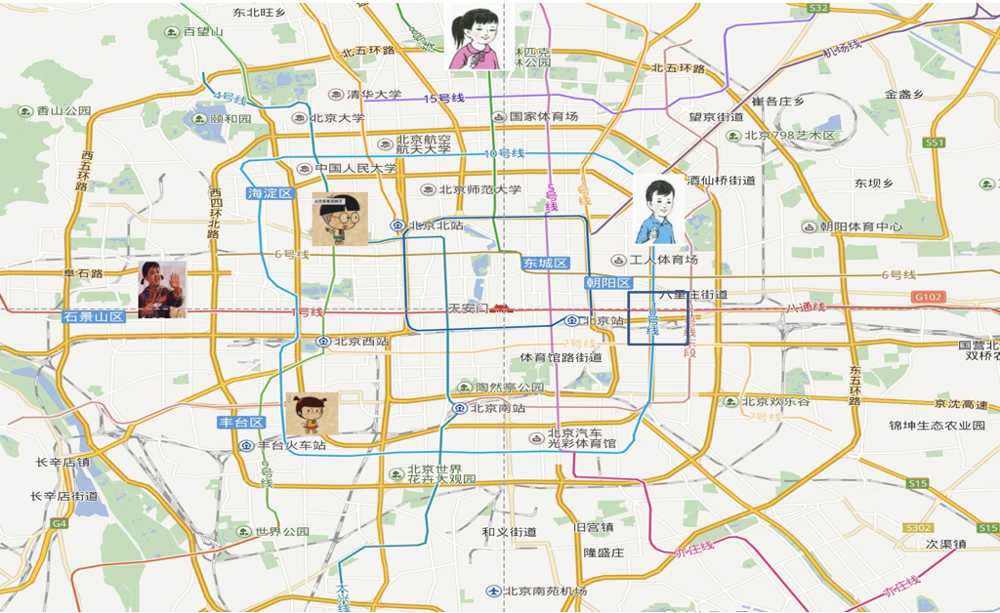
KNN算法思想：如果一个样本在特征空间中的 k 个【 最近邻 】样本中的大多数属于某一个类别，则该样本也属于这个类别
思考：如何确定样本的相似性？
样本相似性：样本都是属于一个任务数据集的。样本距离越近则越相似。
利用K近邻算法预测电影类型
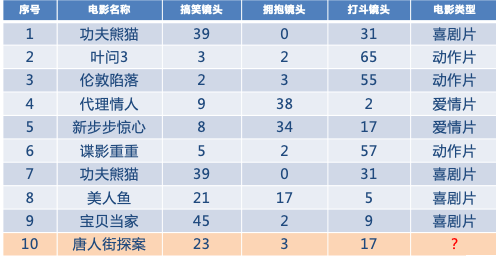
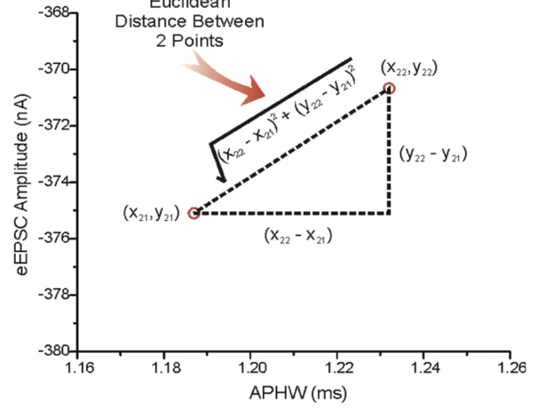
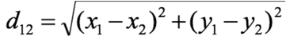
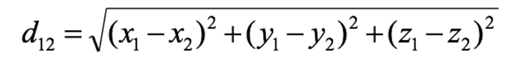
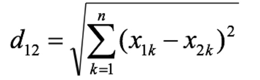
【知道】K值的选择
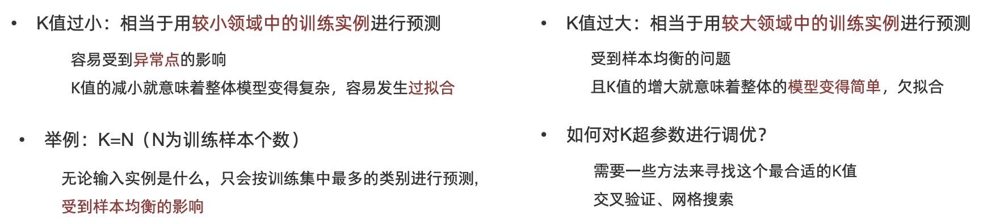
【知道】KNN的应用方式
-
解决问题：分类问题、回归问题
-
算法思想：若一个样本在特征空间中的 k 个最相似的样本大多数属于某一个类别，则该样本也属于这个类别
-
相似性：欧氏距离
-
分类问题的处理流程：
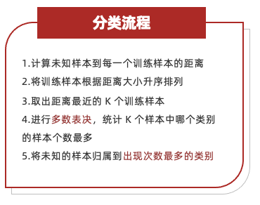
1.计算未知样本到每一个训练样本的距离
2.将训练样本根据距离大小升序排列
3.取出距离最近的 K 个训练样本
4.进行多数表决，统计 K 个样本中哪个类别的样本个数最多
5.将未知的样本归属到出现次数最多的类别
- 回归问题的处理流程：
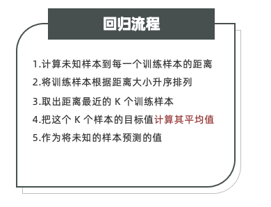
1.计算未知样本到每一个训练样本的距离
2.将训练样本根据距离大小升序排列
3.取出距离最近的 K 个训练样本
4.把这个 K 个样本的目标值计算其平均值
5.作为将未知的样本预测的值
API介绍
学习目标：
1.掌握KNN算法分类API
2.掌握KNN算法回归API
【实操】分类API
KNN分类API：
""" 函数功能：创建一个KNN分类器，用简单数据训练，并对新样本进行预测。 KNN(K-近邻算法) 概述： 专业：找离测试集最近的哪K个样本，然后投票。哪个标签值多，就用它作为测试集的最终结果 KNN算法实现思路： 思路1：分类思路 投票，选票数最多的 思路2：回归思路 求平均值 KNN(K-近邻算法) : 分类(多数表决) 1.计算未知样本到每一个训练样本的距离 2.将训练样本根据距离大小升序排列 3.取出距离最近的 K 个训练样本 4.进行多数表决，统计 K 个样本中哪个类别的样本个数最多 5.将未知的样本归属到出现次数最多的类别 关键参数：n_neighbors=1 表示使用1个最近邻进行预测。 """ # 导包 from sklearn.neighbors import KNeighborsClassifier # 实例化KNN分类器对象，设置参数n_neighbors= （每个样本周围选择几个样本作为参考） model = KNeighborsClassifier(n_neighbors=1) # 定义训练集 特征X 必须是一个二维列表，每一行代表一个样本， 每一列代表一个特征 X=[[0],[1],[2],[3]] # 定义训练集 标签y 必须是一维列表，元素的数目必须和X的行数相同 #y=[0,0,1,1] y=[1,1,0,0] #'''谁的标签在前，就用谁的， 字符串也可以充当标签''' # 训练模型 将特征X和标签y传入模型进行训练 model.fit(X,y) # 推理模型（输入新的数据） 新数据也必须是二维列表 output = model.predict([[1.5]]) print(output) ''' 训练样本 特征 标签（分类） 距离（test2.5） 距离（test1.5） 0 0 (红) 2.5 1.5 1 0 (红) 1.5 0.5 2 1 (绿) 0.5 0.5 3 1 (绿) 0.5 1.5 测试样本 特征 预测类别 2.5 1（绿） '''
n_neighbors：int,可选（默认= 5），k_neighbors查询默认使用的邻居数
【实操】回归API
KNN分类API：
sklearn.neighbors.KNeighborsRegressor(n_neighbors=5)
""" 函数功能：创建一个KNN回归器，用多维特征数据训练，并对新样本进行回归预测。 KNN(K-近邻算法) : 回归(求平均值) 1. 计算未知样本到每一个训练样本的距离 2. 将训练样本根据距离大小升序排列 3. 取出距离最近的 K 个训练样本 4. 把这个 K 个样本的目标值计算其平均值 5. 作为将未知的样本预测的值 关键参数：n_neighbors=2 表示使用2个最近邻的标签值进行平均预测。 应用场景：KNN回归适用于特征空间局部平滑的连续值预测问题。 """ # 从scikit-learn库中导入K最近邻回归器类 from sklearn.neighbors import KNeighborsRegressor # 实例化KNN回归器对象，设置参数n_neighbors= （每个样本周围选择几个样本作为参考） model = KNeighborsRegressor(n_neighbors=2) # 定义训练集 特征X 必须是一个二维列表，每一行代表一个样本， 每一列代表一个特征 # X为四行三列，代表四个样本，三个特征 X=[[0,0,1],[1,1,0],[3,10,10],[4,11,12]] # 定义训练集 标签y 必须是一维列表，元素的数目必须和X的行数相同 y=[0.1,0.2,0.3,0.4] # 训练模型 将特征X和标签y传入模型进行训练 model.fit(X,y) # 推理模型（输入新的数据） 新数据也必须是二维列表 output = model.predict([[3,11,11]]) print(output) ''' #训练样本 特征1 特征2 特征3 标签 0 0 1 0.10 1 1 0 0.20 3 10 10 0.30 4 11 12 0.40 测试样本 3 11 11 0.35 '''
距离度量方法
学习目标：
1.掌握欧氏距离的计算方法
2.掌握曼哈顿距离的计算方法
3.了解切比雪夫距离的计算方法
4.了解闵可夫斯基距离的计算方法
【掌握】欧式距离
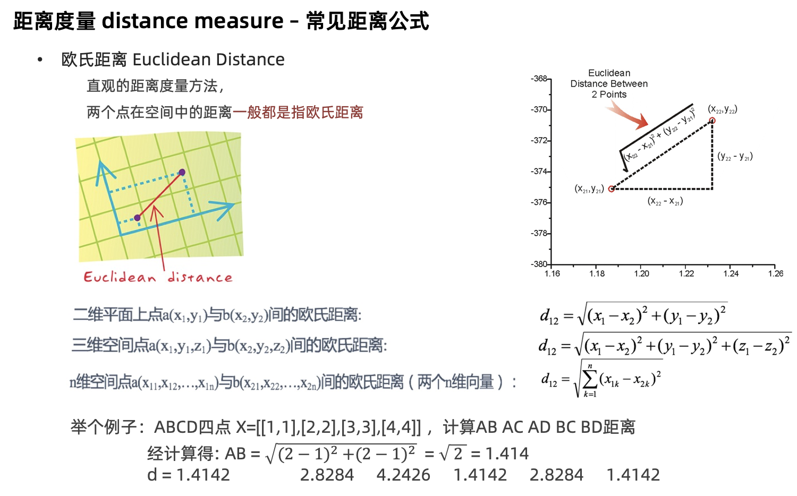
【掌握】曼哈顿距离
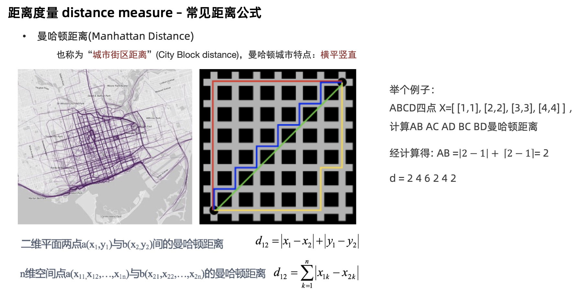
【了解】切比雪夫距离
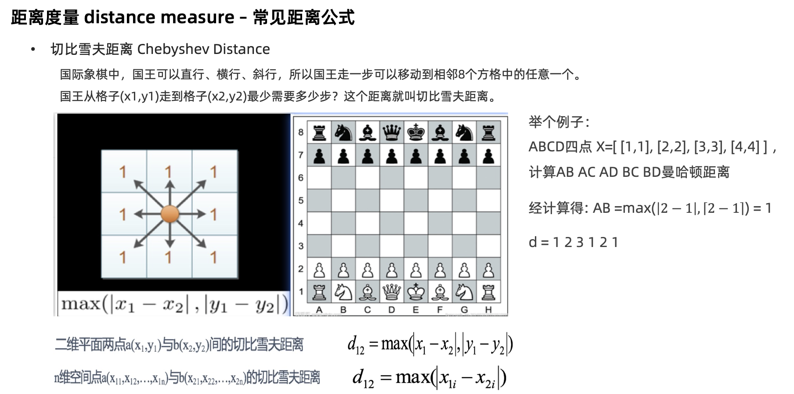
【了解】闵氏距离
•闵可夫斯基距离 Minkowski Distance 闵氏距离，不是一种新的距离的度量方式。而是距离的组合 是对多个距离度量公式的概括性的表述
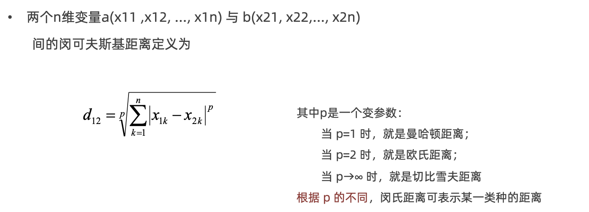
特征预处理
学习目标：
1.知道为什么进行归一化、标准化
2.能应用归一化API处理数据
3.能应用标准化API处理数据
4.使用KNN算法进行鸢尾花分类
【知道】为什么进行归一化、标准化
特征的单位或者大小相差较大，或者某特征的方差相比其他的特征要大出几个数量级，容易影响（支配）目标结果，使得一些模型（算法）无法学习到其它的特征。
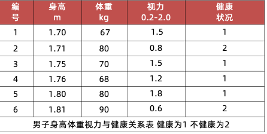
【掌握】归一化
通过对原始数据进行变换把数据映射到【 0~1 】之间
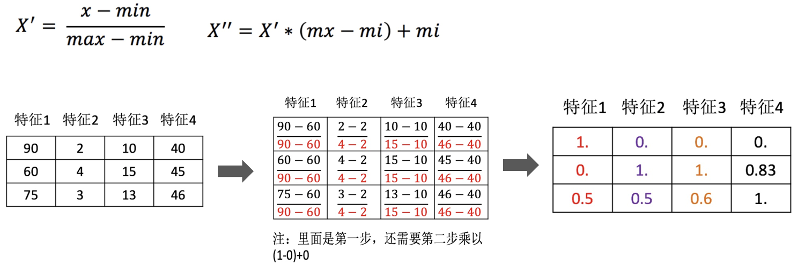
数据归一化的API实现
sklearn.preprocessing.MinMaxScaler (feature_range=(0,1)… )
'''
演示 特征预处理之归一化
特征预处理解释：
背景：
在实际开发中，如果多个特征列因为量纲（单位）的问题，导致数值的差距过大。
则会导致模型预测值偏差。
为了保证每个列对最终的预测结果的权重比都是相近的。
所以我们需要对特征预处理操作。
特征预处理实现方式：
1：归一化（现在）
2：标准化
归一化介绍：
概述：它是特征预处理一种方案。
对原始数据进行处理 ，获取1个，默认[mi,mx] 【0,1】区间值
公式： (min max 列的 mx mi区间的)
x'=(x-min)/(max-min)
x''=x'*(mx-mi)+mi
公式解释：
x=》某一个特征列的值 ：原值
min=》该特征列的最小值
max=》该特征列的最大值
mi=》区间的最小值默认0
mx=》区间的最大值默认1
弊端：
强依赖于该列的特征 最大值和最小值，如果差值比较大的话，计算效果不明显
归一化适用于小数据集 的特征预处理。
标准化介绍
概述：特征预处理一种方案
公式： x' =(x-该列的平均值)/该列的标准差
公式解释：
x=》某特征列的某个具体的值 即原值
mean=》该列的平均值
应用场景：比较合适大数据集的应用场景。当数据量比较大的时候
受最大值和最小值的影响会微乎其微。
总结：
无论是归一化，还是标准化，目的都是避免因为特征列的量纲问题，导致权重不同
从而影响预测结果
与MinMaxScaler的关键区别：
- MinMaxScaler：缩放到固定范围（如[0,1]），对异常值敏感
- StandardScaler：基于统计分布（均值/标准差），对异常值相对鲁棒
'''
# 导包
from sklearn.preprocessing import MinMaxScaler
from sklearn.preprocessing import StandardScaler
# 创建数据, 三行4列，代表3个样本，4个特征列。 不同特征量纲不一致
data = [[90, 2, 10, 40],
[60, 4, 15, 45],
[75, 3, 13, 46]]
# 创建归一化对象
min_max_scaler = MinMaxScaler()
# 对数据进行归一化，调用fit_transform方法
output1 = min_max_scaler.fit_transform(data)
#print(output1)
# 创建标准化对象
standard_scaler = StandardScaler()
# 对数据进行标准化，调用fit_transform方法
output2 = standard_scaler.fit_transform(data)
print(output2)
# 打印标准化过程中的均值和方差
print(standard_scaler.mean_)
print(standard_scaler.var_)
feature_range 缩放区间
- 调用 fit_transform(X) 将特征进行归一化缩放
归一化受到最大值与最小值的影响，这种方法容易受到异常数据的影响, 鲁棒性较差，适合传统精确小数据场景
【掌握】标准化
通过对原始数据进行标准化，转换为【 均值为0 ， 标准差为1 】的标准正态分布的数据
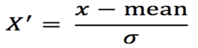
- mean 【 均值 】
- σ 为特征的【 标准差 】
数据标准化的API实现
sklearn.preprocessing. StandardScaler()
调用 fit_transform(X) 将特征进行归一化缩放
import numpy as np from sklearn.preprocessing import StandardScaler # 每一列代表一个量纲不同的特征 X_train = np.array([ [90, 2, 10, 40], [60, 4, 15, 45], [75, 3, 13, 46], ]) X_new = np.array([[80, 3, 12, 44]]) scaler = StandardScaler() X_train_scaled = scaler.fit_transform(X_train) # 测试数据只能使用训练集上学到的均值和标准差 X_new_scaled = scaler.transform(X_new) print(X_train_scaled.round(3)) print(X_new_scaled.round(3)) print("各列均值：", scaler.mean_) print("各列方差：", scaler.var_)
对于标准化来说，如果出现异常点，由于具有一定数据量，少量的异常点对于平均值的影响并不大
【实操】利用KNN算法进行鸢尾花分类
鸢尾花Iris Dataset数据集是机器学习领域经典数据集，鸢尾花数据集包含了150条鸢尾花信息，每50条取自三个鸢尾花中之一：Versicolour、Setosa和Virginica
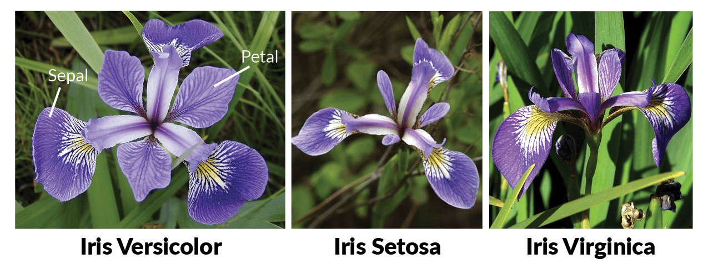
每个花的特征用如下属性描述：
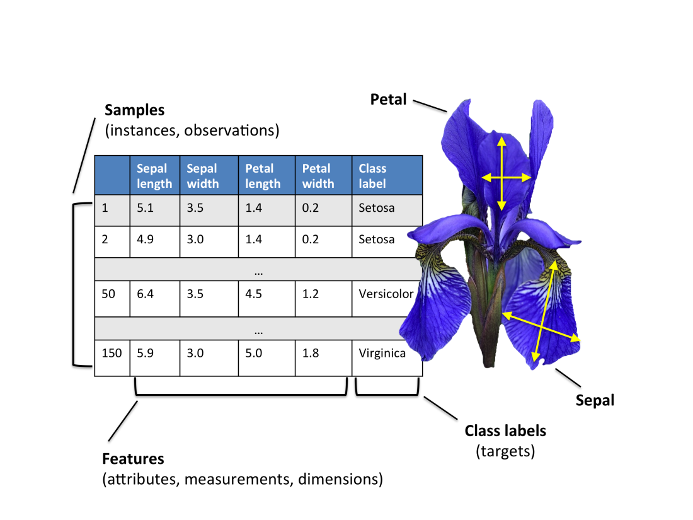
代码实现：
''' 查看鸢尾花数据集 ''' # 导入包 from sklearn.datasets import load_iris # 加载数据集 mydataset = load_iris() # 查看数据集的类型 print(type(mydataset)) # <class 'sklearn.utils.Bunch'> ==> dict # 查看数据集所有的‘键’ print(mydataset.keys()) #['data', 'target', 'frame', 'target_names', 'DESCR', 'feature_names', 'filename', 'data_module'] # 查看数据集基本 信息 150行 4列 #print(mydataset.data, len(mydataset.data)) # 查看数据集标签信息 #print(mydataset.target) # 打印每个标签对应的名称 #print(mydataset.target_names) # 打印数据集的描述信息 #print(mydataset.DESCR) # 数据文件名称 print(mydataset.filename) # iris.csv # 数据集所在的模块 print(mydataset.data_module) # sklearn.datasets.data
超参数选择的方法
学习目标：
1.知道交叉验证是什么？
2.知道网格搜索是什么？
3.知道交叉验证网格搜索API函数用法
4.能实践交叉验证网格搜索进行模型超参数调优
5.利用KNN算法实现手写数字识别
【知道】交叉验证
交叉验证是一种数据集的分割方法：
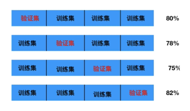
交叉验证法原理：将数据集划分为 cv=10 份：
1.第一次：把第一份数据做验证集，其他数据做训练
2.第二次：把第二份数据做验证集，其他数据做训练
3.... 以此类推，总共训练10次，评估10次。
4.使用训练集+验证集多次评估模型，取平均值做交叉验证为模型得分
5.若k=5模型得分最好，再使用全部训练集(训练集+验证集) 对k=5模型再训练一边，再使用测试集对k=5模型做评估
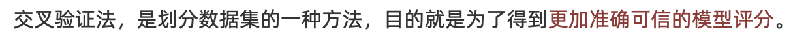
【知道】网格搜索
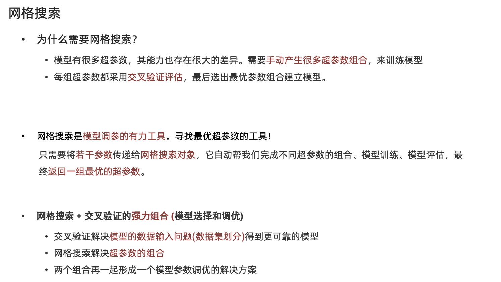
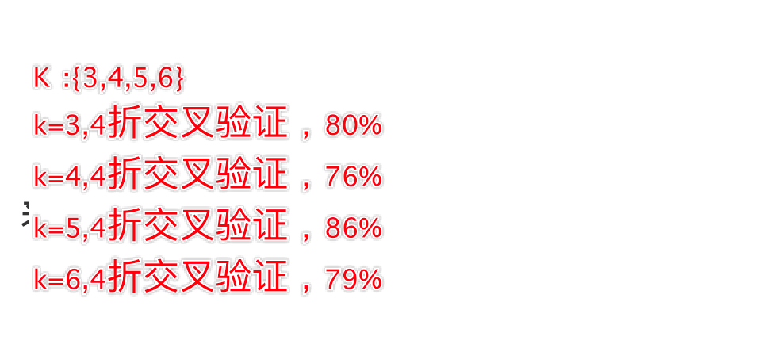
交叉验证网格搜索的API:
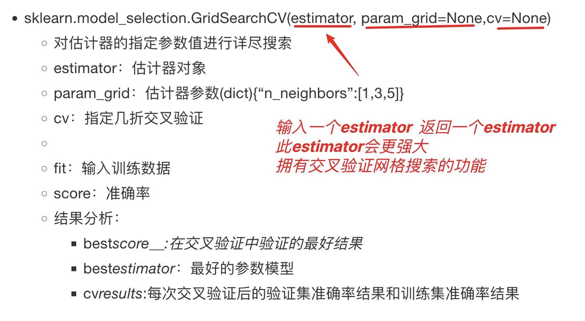
交叉验证网格搜索在鸢尾花分类中的应用：
""" 交叉验证解释： 概述：交叉验证是一种更完善、可信度更高的一种模型评估方法。 思路：把数据集份N份，每次都去1份当做测试集，其他当做训练集，然后在给模型评分 然后再用下一份当做测试集，其他当做训练集（皇帝轮流坐，今天到你家）。最后计算所有的 均值，当模型最终评分。 思路是： 把数据分成N份，例如数据分成4份， 4折交叉验证 第1次：把第1份数据作为验证集（测试集），其他当做训练集，训练模型，模型预测，获取：准确率-》准确率1 第2次：把第2份数据作为验证集（测试集），其他当做训练集，训练模型，模型预测，获取：准确率-》准确率2 第3次：把第3份数据作为验证集（测试集），其他当做训练集，训练模型，模型预测，获取：准确率-》准确率3 第4次：把第4份数据作为验证集（测试集），其他当做训练集，训练模型，模型预测，获取：准确率-》准确率4 然后计算上诉4次的准确率的平均值，作为模型最终准确率 假设第4次最好（准确率最高），则：用全部数据（训练集+测试集）训练模型，再用第4次的测试集对模型进行测试 目的： 为了让模型最终结果更加准确 好处：相比单一切分的训练集和测试集获取的评分，经过交叉验证可信度更高 网格搜索： 概述：机器学习内置API ，一般结合交叉验证使用，通过API实现找到最优超参数 目的：网络搜素+交叉验证 ： 让模型变得更强 """ from sklearn.datasets import load_iris # 加载数据集 from sklearn.model_selection import train_test_split # 分割数据集 from sklearn.preprocessing import StandardScaler # 数据集标准化工具 from sklearn.neighbors import KNeighborsClassifier # KNN 分类器模型 from sklearn.metrics import accuracy_score # 模型评估的精准度计算工具 from sklearn.model_selection import GridSearchCV # 交叉验证网格搜索 工具 # 加载数据集 mydataset = load_iris() # 数据集切分为训练集和测试集 #参数1 数据集（特征） 参数2 标签 参数3 测试集所占比例 参数4 随机种子 #参数5 输入样本标签（array），按照标签的各个类别的占比，来划分训练集和测试集。‘ # 确保在训练集和测试集的样本类别分布一致 X_train, X_test, y_train, y_test = \ train_test_split(mydataset.data, mydataset.target, test_size=0.2, stratify=mydataset.target) # 查看训练集和测试集的样本数 #print(X_train.shape, X_test.shape) # 对数据集进行标准化（实例化） transformer = StandardScaler() # 对训练集 1计算均值方差，2 进行标准化 X_train = transformer.fit_transform(X_train) # 对于测试集，就使用训练集的均值方差进行标准化 X_test = transformer.transform(X_test) # 定义KNN 分类器模型对象 不输入超参 model = KNeighborsClassifier() # 定义字典，明确超参的可能取值范围 #字典的键是超参数名称，值是可能该超参的取值范围 param_dict = {'n_neighbors': [1, 3, 5, 7, 9, 11]} # 创建交叉验证网格搜索对象(对原模型进一步封装) # 参数1 是原模型 参数2 超参数字典 参数3 交叉验证的次数 model = GridSearchCV(model, param_dict, cv=4) model.fit(X_train, y_train) # 训练开始，送入训练集特征和标签 # 打印最有参数，以及最高评分 print('最合适的超参数：', model.best_params_) # {'n_neighbors': 3} print('最高评分：', model.best_score_) # 0.9666666666666667 print('获得最优模型', model.best_estimator_) # KNeighborsClassifier(n_neighbors=3) # 如果想查看交叉验证的中间结果，可以通过属性查看 #print(model.cv_results_) # 重新定义最佳模型 final_model = KNeighborsClassifier(n_neighbors=3) # 用所有的训练集进行训练 final_model.fit(X_train, y_train) #模型推理 + 评估 output = final_model.predict(X_test) # 模型评估 final_score = accuracy_score(y_test, output) print('最优模型在测试集上的准确度',final_score) # K = 3 ，0.933333333333333 # K =1 0.9666666666666667 # K = 5 0.9333333333333333
利用KNN算法实现手写数字识别
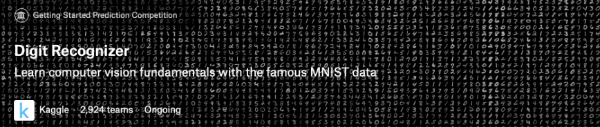
MNIST手写数字识别 是计算机视觉领域中 "hello world"级别的数据集
- 1999年发布，成为分类算法基准测试的基础
- 随着新的机器学习技术的出现，MNIST仍然是研究人员和学习者的可靠资源。
本次案例中，我们的目标是从数万个手写图像的数据集中正确识别数字。
数据介绍
数据文件 train.csv 和 test.csv 包含从 0 到 9 的手绘数字的灰度图像。
-
每个图像高 28 像素，宽28 像素，共784个像素。
-
每个像素取值范围[0,255]，取值越大意味着该像素颜色越深
-
训练数据集（train.csv）共785列。第一列为 "标签"，为该图片对应的手写数字。其余784列为该图像的像素值
-
训练集中的特征名称均有pixel前缀，后面的数字（[0,783])代表了像素的序号。
像素组成图像如下：
000 001 002 003 ... 026 027 028 029 030 031 ... 054 055 056 057 058 059 ... 082 083 | | | | ...... | | 728 729 730 731 ... 754 755 756 757 758 759 ... 782 783
数据集示例如下:
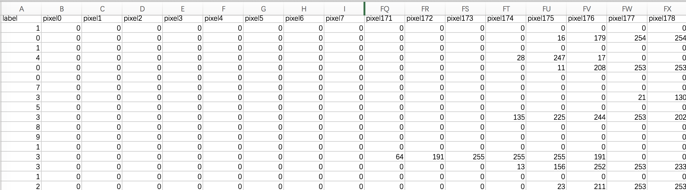
''' 案例： 训练KNN分类模型将手写数字图像数据读入，预测分类 步骤 1 加载数据 2 数据预处理 a 特征列和标签列的分割 b 归一化 c 拆分数据集为 训练集和测试集 3 模型训练 4 模型评估 5 模型保存 ''' # 导包 import matplotlib.pyplot as plt # 绘图工具 import numpy as np import pandas as pd from sklearn.model_selection import train_test_split # 数据集分割工具 from sklearn.neighbors import KNeighborsClassifier # knn分类器 import joblib # 保存模型 from collections import Counter # 数据集分布的统计信息 from sklearn.metrics import accuracy_score # 步骤 # 1 加载数据 path = r'data/手写数字识别.csv' df = pd.read_csv(path) # 从csv文档中加载数据 # 2 数据预处理 # a 特征列和标签列的分割 x = df.iloc[:, 1:] y = df.iloc[:, 0] # b 归一化 x = x/255. # c 拆分数据集为 训练集和测试集 x_train,x_test, y_train, y_test = train_test_split(x, y, test_size=0.2, random_state=12, stratify=y) # 3 模型训练 # 创建KNN分类器模型对象 model = KNeighborsClassifier(n_neighbors=3) model.fit(x_train, y_train) # 4 模型评估 2种方式 print('求准确率方法1',model.score(x_test,y_test)) # accuracy_score这个工具需要输入的是 测试集和标签 和 测试集的输出 print('求准确率方法2',accuracy_score(y_test, model.predict(x_test))) # 5 模型保存 输入 模型的对象，以及模型保存的路径 文件名 joblib.dump(model, 'knn_model.pkl') ''' 案例： 手写数字识别：推理代码 步骤 1 图像加载 2 图像的预处理 a 归一化 b 维度转换 28x28 --》 1,784 3 模型预测 a 模型定义 b 预训练模型参数的读取加载 c 测试图像送入模型 ''' # 导包 import matplotlib.pyplot as plt # 绘图工具 import numpy as np import pandas as pd from sklearn.model_selection import train_test_split # 数据集分割工具 from sklearn.neighbors import KNeighborsClassifier # knn分类器 import joblib # 保存模型 from collections import Counter # 数据集分布的统计信息 from sklearn.metrics import accuracy_score import cv2 from torchvision.models.video.resnet import model_urls # 步骤 # 1 图像加载 对于png图像，默认归一化 读取的通道顺序为RGB （原图是灰度图，那么读取完只有单通道） 对于jpg图像，不进行归一化 img = plt.imread(r'data/demo.png') #img2 = cv2.imread(r'data/demo.png') # 如果你的图像是用opencv读取，且是3通道彩图的话，那么读取的数组的通道顺序为BGR print(img, img.shape) plt.imshow(img,cmap='gray') plt.show() # 2 图像的预处理 # a 归一化 （plt 已经完成该步骤） # b 维度转换 28x28 --》 1， 784 利用 reshape这个方法 img = img.reshape(1, -1) print(img.shape) # 3 模型预测 # a 模型定义 #model = Mymodel() # b 预训练模型参数的读取加载 #model.load_state_dict(torch.load('mymodel.pth')) model = joblib.load('knn_model.pkl') # 输入模型文件的路径 # c 测试图像送入模型 output = model.predict(img) print('预测结果：', output)
作业
1.完成KNN算法部分的思维导图
2.说明常见的距离度量方法
3.说明特征预处理的方法
4.编写KNN代码实现鸢尾花分类案例
5.编写KNN代码实现手写数字识别（特征预处理，交叉验证网格搜索）